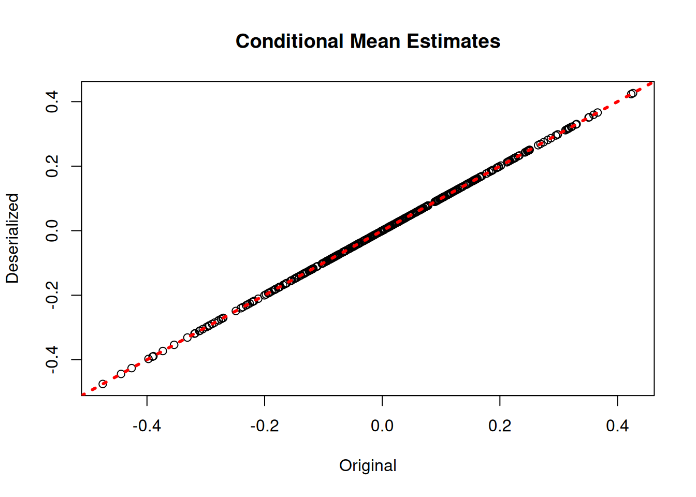
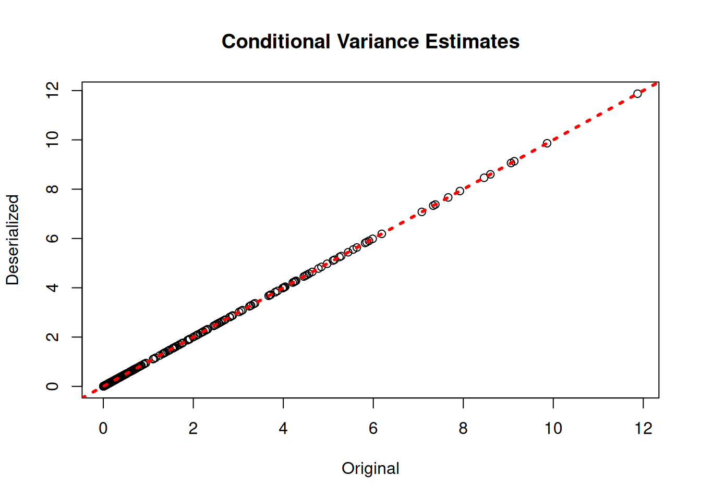
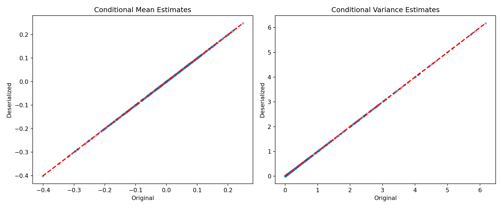
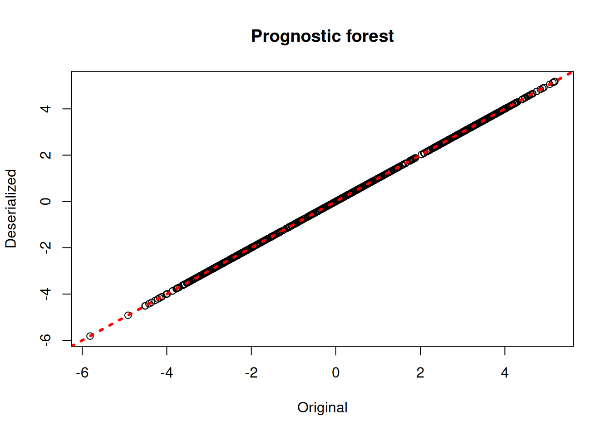
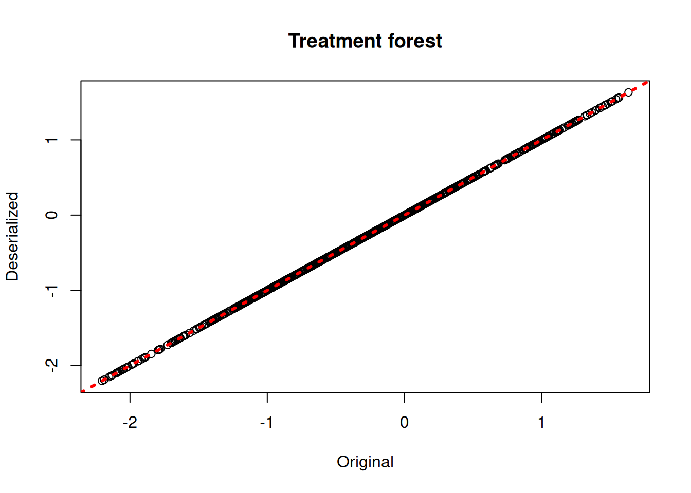
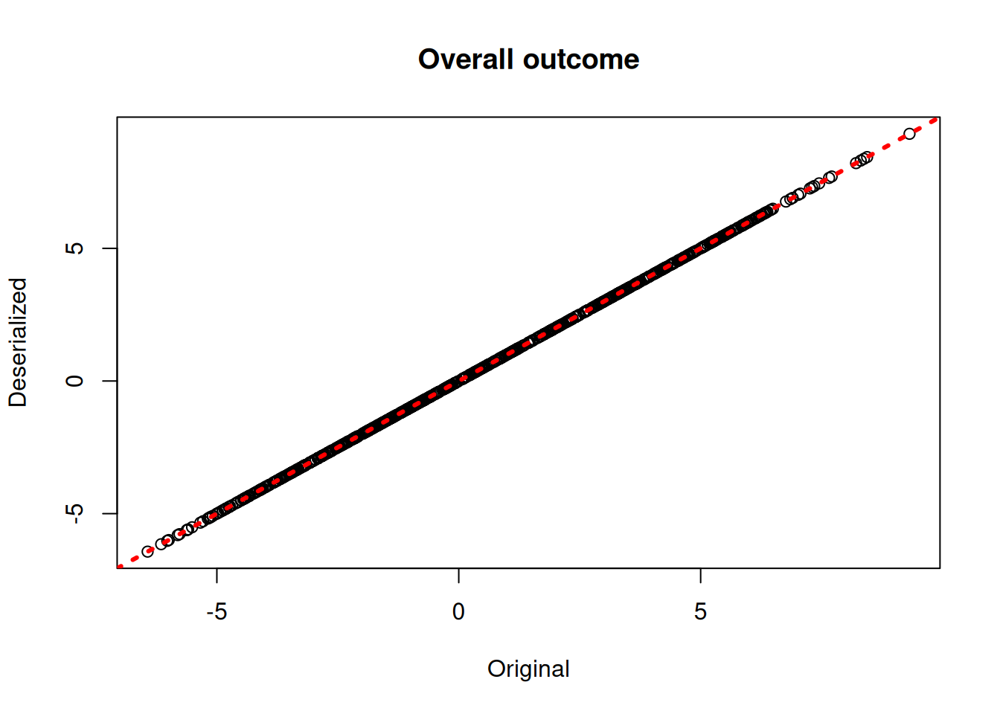
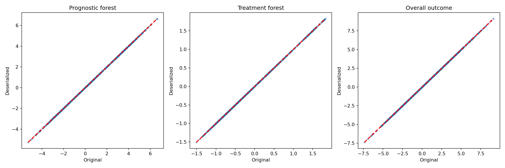

library(stochtree)Saving and Loading Fitted Models
This vignette demonstrates how to serialize ensemble models to JSON files and deserialize back to an R or Python session, where the forests and other parameters can be used for prediction and further analysis.
Setup
Load necessary packages
import json
import numpy as np
import matplotlib.pyplot as plt
import pandas as pd
from scipy.stats import norm
from stochtree import BARTModel, BCFModelDefine several simple helper functions used in the data generating processes below
g <- function(x) {ifelse(x[,5]==1,2,ifelse(x[,5]==2,-1,-4))}
mu1 <- function(x) {1+g(x)+x[,1]*x[,3]}
mu2 <- function(x) {1+g(x)+6*abs(x[,3]-1)}
tau1 <- function(x) {rep(3,nrow(x))}
tau2 <- function(x) {1+2*x[,2]*x[,4]}def g(x): return np.where(x[:,4]==1, 2, np.where(x[:,4]==2, -1, -4))
def mu1(x): return 1 + g(x) + x[:,0] * x[:,2]
def mu2(x): return 1 + g(x) + 6 * np.abs(x[:,2] - 1)
def tau1(x): return np.full(x.shape[0], 3.0)
def tau2(x): return 1 + 2 * x[:,1] * x[:,3]Set a seed for reproducibility
random_seed = 1234
set.seed(random_seed)random_seed = 1234
rng = np.random.default_rng(random_seed)BART Serialization
BART models are initially sampled and constructed using the bart() function. Here we show how to save and reload models from JSON files on disk.
Model Building
Draw from a relatively straightforward heteroskedastic supervised learning DGP.
# Generate the data
n <- 500
p_x <- 10
X <- matrix(runif(n*p_x), ncol = p_x)
f_XW <- 0
s_XW <- (
((0 <= X[,1]) & (0.25 > X[,1])) * (0.5*X[,3]) +
((0.25 <= X[,1]) & (0.5 > X[,1])) * (1*X[,3]) +
((0.5 <= X[,1]) & (0.75 > X[,1])) * (2*X[,3]) +
((0.75 <= X[,1]) & (1 > X[,1])) * (3*X[,3])
)
y <- f_XW + rnorm(n, 0, 1)*s_XW
# Split data into test and train sets
test_set_pct <- 0.2
n_test <- round(test_set_pct*n)
n_train <- n - n_test
test_inds <- sort(sample(1:n, n_test, replace = FALSE))
train_inds <- (1:n)[!((1:n) %in% test_inds)]
X_test <- as.data.frame(X[test_inds,])
X_train <- as.data.frame(X[train_inds,])
y_test <- y[test_inds]
y_train <- y[train_inds]
s_x_test <- s_XW[test_inds]
s_x_train <- s_XW[train_inds]# Note: new rng here so Python Demo 2 is independent of Demo 1
rng2 = np.random.default_rng(5678)
n = 500
p_x = 10
X2 = rng2.uniform(size=(n, p_x))
s_XW = (
((X2[:, 0] >= 0) & (X2[:, 0] < 0.25)) * (0.5 * X2[:, 2]) +
((X2[:, 0] >= 0.25) & (X2[:, 0] < 0.5)) * (1.0 * X2[:, 2]) +
((X2[:, 0] >= 0.5) & (X2[:, 0] < 0.75)) * (2.0 * X2[:, 2]) +
((X2[:, 0] >= 0.75) & (X2[:, 0] < 1.0)) * (3.0 * X2[:, 2])
)
y2 = rng2.standard_normal(n) * s_XW
n_test2 = round(0.2 * n)
test_inds2 = rng2.choice(n, n_test2, replace=False)
train_inds2 = np.setdiff1d(np.arange(n), test_inds2)
X_test2 = pd.DataFrame(X2[test_inds2])
X_train2 = pd.DataFrame(X2[train_inds2])
y_test2 = y2[test_inds2]
y_train2 = y2[train_inds2]Sample a BART model.
num_gfr <- 10
num_burnin <- 0
num_mcmc <- 100
general_params <- list(sample_sigma2_global = F)
mean_forest_params <- list(sample_sigma2_leaf = F, num_trees = 100,
alpha = 0.95, beta = 2, min_samples_leaf = 5)
variance_forest_params <- list(num_trees = 50, alpha = 0.95,
beta = 1.25, min_samples_leaf = 1)
bart_model <- stochtree::bart(
X_train = X_train, y_train = y_train, X_test = X_test,
num_gfr = num_gfr, num_burnin = num_burnin, num_mcmc = num_mcmc,
general_params = general_params, mean_forest_params = mean_forest_params,
variance_forest_params = variance_forest_params
)num_gfr = 10
num_burnin = 0
num_mcmc = 100
bart_model = BARTModel()
bart_model.sample(
X_train=X_train2, y_train=y_train2, X_test=X_test2,
num_gfr=num_gfr, num_burnin=num_burnin, num_mcmc=num_mcmc,
general_params={"num_threads": 1, "sample_sigma2_global": False},
mean_forest_params={"sample_sigma2_leaf": False, "num_trees": 100,
"alpha": 0.95, "beta": 2.0, "min_samples_leaf": 5},
variance_forest_params={"num_trees": 50, "alpha": 0.95,
"beta": 1.25, "min_samples_leaf": 1},
)Serialization
Save the BART model to disk.
saveBARTModelToJsonFile(bart_model, "bart_r.json")bart_json_string = bart_model.to_json()
with open("bart_py.json", "w") as f:
json.dump(json.loads(bart_json_string), f)Deserialization
Reload the BART model from disk.
bart_model_reload <- createBARTModelFromJsonFile("bart_r.json")with open("bart_py.json", "r") as f:
bart_json_reload = json.dumps(json.load(f))
bart_model_reload = BARTModel()
bart_model_reload.from_json(bart_json_reload)Check that the predictions align with those of the original model.
bart_preds_reload <- predict(bart_model_reload, X_train)
plot(rowMeans(bart_model$y_hat_train), rowMeans(bart_preds_reload$y_hat),
xlab = "Original", ylab = "Deserialized", main = "Conditional Mean Estimates")
abline(0,1,col="red",lwd=3,lty=3)
plot(rowMeans(bart_model$sigma2_x_hat_train), rowMeans(bart_preds_reload$variance_forest_predictions),
xlab = "Original", ylab = "Deserialized", main = "Conditional Variance Estimates")
abline(0,1,col="red",lwd=3,lty=3)
bart_preds_orig = bart_model.predict(X=X_train2, terms=["y_hat", "variance_forest"])
bart_preds_reload = bart_model_reload.predict(X=X_train2, terms=["y_hat", "variance_forest"])
fig, (ax1, ax2) = plt.subplots(1, 2, figsize=(12, 5))
yhat_orig = bart_preds_orig["y_hat"].mean(axis=1)
yhat_reload = bart_preds_reload["y_hat"].mean(axis=1)
lo, hi = min(yhat_orig.min(), yhat_reload.min()), max(yhat_orig.max(), yhat_reload.max())
ax1.scatter(yhat_orig, yhat_reload, alpha=0.4, s=10)
ax1.plot([lo, hi], [lo, hi], color="red", linestyle="dashed", linewidth=2)
ax1.set_xlabel("Original")
ax1.set_ylabel("Deserialized")
ax1.set_title("Conditional Mean Estimates")
# multi-term predict returns variance forest under "variance_forest_predictions"
vhat_orig = bart_preds_orig["variance_forest_predictions"].mean(axis=1)
vhat_reload = bart_preds_reload["variance_forest_predictions"].mean(axis=1)
lo, hi = min(vhat_orig.min(), vhat_reload.min()), max(vhat_orig.max(), vhat_reload.max())
ax2.scatter(vhat_orig, vhat_reload, alpha=0.4, s=10)
ax2.plot([lo, hi], [lo, hi], color="red", linestyle="dashed", linewidth=2)
ax2.set_xlabel("Original")
ax2.set_ylabel("Deserialized")
ax2.set_title("Conditional Variance Estimates")
plt.tight_layout()
plt.show()
Bayesian Causal Forest (BCF) Serialization
BCF models are initially sampled and constructed using the bcf() function. Here we show how to save and reload models from JSON files on disk.
Model Building
Draw from a modified version of the data generating process defined in Hahn et al. (2020).
# Generate synthetic data
n <- 1000
snr <- 2
x1 <- rnorm(n)
x2 <- rnorm(n)
x3 <- rnorm(n)
x4 <- as.numeric(rbinom(n,1,0.5))
x5 <- as.numeric(sample(1:3,n,replace=TRUE))
X <- cbind(x1,x2,x3,x4,x5)
p <- ncol(X)
mu_x <- mu1(X)
tau_x <- tau2(X)
pi_x <- 0.8*pnorm((3*mu_x/sd(mu_x)) - 0.5*X[,1]) + 0.05 + runif(n)/10
Z <- rbinom(n,1,pi_x)
E_XZ <- mu_x + Z*tau_x
rfx_group_ids <- rep(c(1,2), n %/% 2)
rfx_coefs <- matrix(c(-1, -1, 1, 1), nrow=2, byrow=TRUE)
rfx_basis <- cbind(1, runif(n, -1, 1))
rfx_term <- rowSums(rfx_coefs[rfx_group_ids,] * rfx_basis)
y <- E_XZ + rfx_term + rnorm(n, 0, 1)*(sd(E_XZ)/snr)
X <- as.data.frame(X)
X$x4 <- factor(X$x4, ordered = TRUE)
X$x5 <- factor(X$x5, ordered = TRUE)
# Split data into test and train sets
test_set_pct <- 0.2
n_test <- round(test_set_pct*n)
n_train <- n - n_test
test_inds <- sort(sample(1:n, n_test, replace = FALSE))
train_inds <- (1:n)[!((1:n) %in% test_inds)]
X_test <- X[test_inds,]
X_train <- X[train_inds,]
pi_test <- pi_x[test_inds]
pi_train <- pi_x[train_inds]
Z_test <- Z[test_inds]
Z_train <- Z[train_inds]
y_test <- y[test_inds]
y_train <- y[train_inds]
mu_test <- mu_x[test_inds]
mu_train <- mu_x[train_inds]
tau_test <- tau_x[test_inds]
tau_train <- tau_x[train_inds]
rfx_group_ids_test <- rfx_group_ids[test_inds]
rfx_group_ids_train <- rfx_group_ids[train_inds]
rfx_basis_test <- rfx_basis[test_inds,]
rfx_basis_train <- rfx_basis[train_inds,]
rfx_term_test <- rfx_term[test_inds]
rfx_term_train <- rfx_term[train_inds]random_seed = 1234
rng = np.random.default_rng(random_seed)
n = 1000
snr = 2
x1 = rng.standard_normal(n)
x2 = rng.standard_normal(n)
x3 = rng.standard_normal(n)
x4 = rng.binomial(1, 0.5, n).astype(float)
x5 = rng.choice([1, 2, 3], n).astype(float)
X = np.column_stack([x1, x2, x3, x4, x5])
mu_x = mu1(X)
tau_x = tau2(X)
pi_x = 0.8 * norm.cdf((3 * mu_x / np.std(mu_x)) - 0.5 * X[:, 0]) + 0.05 + rng.uniform(size=n) / 10
Z = rng.binomial(1, pi_x)
E_XZ = mu_x + Z * tau_x
rfx_group_ids = np.tile([1, 2], n // 2) # 1-indexed group IDs
rfx_coefs = np.array([[-1.0, -1.0], [1.0, 1.0]])
rfx_basis = np.column_stack([np.ones(n), rng.uniform(-1, 1, n)])
rfx_term = np.sum(rfx_coefs[rfx_group_ids - 1] * rfx_basis, axis=1)
y = E_XZ + rfx_term + rng.standard_normal(n) * (np.std(E_XZ) / snr)
# Ordered categoricals
X_df = pd.DataFrame(X, columns=["x1", "x2", "x3", "x4", "x5"])
X_df["x4"] = pd.Categorical(X_df["x4"].astype(int), categories=[0, 1], ordered=True)
X_df["x5"] = pd.Categorical(X_df["x5"].astype(int), categories=[1, 2, 3], ordered=True)
# Train/test split
test_set_pct = 0.2
n_test = round(test_set_pct * n)
test_inds = rng.choice(n, n_test, replace=False)
train_inds = np.setdiff1d(np.arange(n), test_inds)
X_test = X_df.iloc[test_inds]
X_train = X_df.iloc[train_inds]
pi_test = pi_x[test_inds]
pi_train = pi_x[train_inds]
Z_test = Z[test_inds]
Z_train = Z[train_inds]
y_test = y[test_inds]
y_train = y[train_inds]
rfx_group_ids_test = rfx_group_ids[test_inds]
rfx_group_ids_train = rfx_group_ids[train_inds]
rfx_basis_test = rfx_basis[test_inds]
rfx_basis_train = rfx_basis[train_inds]Sample a BCF model.
num_gfr <- 10
num_burnin <- 0
num_mcmc <- 100
prognostic_forest_params <- list(sample_sigma2_leaf = F)
treatment_effect_forest_params <- list(sample_sigma2_leaf = F)
bcf_model <- bcf(
X_train = X_train, Z_train = Z_train, y_train = y_train, propensity_train = pi_train,
rfx_group_ids_train = rfx_group_ids_train, rfx_basis_train = rfx_basis_train,
X_test = X_test, Z_test = Z_test, propensity_test = pi_test,
rfx_group_ids_test = rfx_group_ids_test, rfx_basis_test = rfx_basis_test,
num_gfr = num_gfr, num_burnin = num_burnin, num_mcmc = num_mcmc,
prognostic_forest_params = prognostic_forest_params,
treatment_effect_forest_params = treatment_effect_forest_params
)num_gfr = 10
num_burnin = 0
num_mcmc = 100
bcf_model = BCFModel()
bcf_model.sample(
X_train=X_train, Z_train=Z_train, y_train=y_train, propensity_train=pi_train,
rfx_group_ids_train=rfx_group_ids_train, rfx_basis_train=rfx_basis_train,
X_test=X_test, Z_test=Z_test, propensity_test=pi_test,
rfx_group_ids_test=rfx_group_ids_test, rfx_basis_test=rfx_basis_test,
num_gfr=num_gfr, num_burnin=num_burnin, num_mcmc=num_mcmc,
general_params={"num_threads": 1},
prognostic_forest_params={"sample_sigma2_leaf": False},
treatment_effect_forest_params={"sample_sigma2_leaf": False},
)Serialization
Save the BCF model to disk.
saveBCFModelToJsonFile(bcf_model, "bcf_r.json")bcf_json_string = bcf_model.to_json()
with open("bcf_py.json", "w") as f:
json.dump(json.loads(bcf_json_string), f)Deserialization
Reload the BCF model from disk.
bcf_model_reload <- createBCFModelFromJsonFile("bcf_r.json")with open("bcf_py.json", "r") as f:
bcf_json_reload = json.dumps(json.load(f))
bcf_model_reload = BCFModel()
bcf_model_reload.from_json(bcf_json_reload)Check that the predictions align with those of the original model.
bcf_preds_reload <- predict(bcf_model_reload, X_train, Z_train, pi_train, rfx_group_ids_train, rfx_basis_train)
plot(rowMeans(bcf_model$mu_hat_train), rowMeans(bcf_preds_reload$mu_hat),
xlab = "Original", ylab = "Deserialized", main = "Prognostic forest")
abline(0,1,col="red",lwd=3,lty=3)
plot(rowMeans(bcf_model$tau_hat_train), rowMeans(bcf_preds_reload$tau_hat),
xlab = "Original", ylab = "Deserialized", main = "Treatment forest")
abline(0,1,col="red",lwd=3,lty=3)
plot(rowMeans(bcf_model$y_hat_train), rowMeans(bcf_preds_reload$y_hat),
xlab = "Original", ylab = "Deserialized", main = "Overall outcome")
abline(0,1,col="red",lwd=3,lty=3)
bcf_preds_orig = bcf_model.predict(
X=X_train, Z=Z_train, propensity=pi_train,
rfx_group_ids=rfx_group_ids_train, rfx_basis=rfx_basis_train,
terms=["mu", "tau", "y_hat"],
)
bcf_preds_reload = bcf_model_reload.predict(
X=X_train, Z=Z_train, propensity=pi_train,
rfx_group_ids=rfx_group_ids_train, rfx_basis=rfx_basis_train,
terms=["mu", "tau", "y_hat"],
)
fig, axes = plt.subplots(1, 3, figsize=(15, 5))
for ax, term, title in zip(
axes,
["mu_hat", "tau_hat", "y_hat"],
["Prognostic forest", "Treatment forest", "Overall outcome"],
):
orig = bcf_preds_orig[term].mean(axis=1)
reload = bcf_preds_reload[term].mean(axis=1)
lo, hi = min(orig.min(), reload.min()), max(orig.max(), reload.max())
ax.scatter(orig, reload, alpha=0.4, s=10)
ax.plot([lo, hi], [lo, hi], color="red", linestyle="dashed", linewidth=2)
ax.set_xlabel("Original")
ax.set_ylabel("Deserialized")
ax.set_title(title)
plt.tight_layout()
plt.show()
References
Hahn, P Richard, Jared S Murray, and Carlos M Carvalho. 2020. “Bayesian Regression Tree Models for Causal Inference: Regularization, Confounding, and Heterogeneous Effects (with Discussion).” Bayesian Analysis 15 (3): 965–1056.